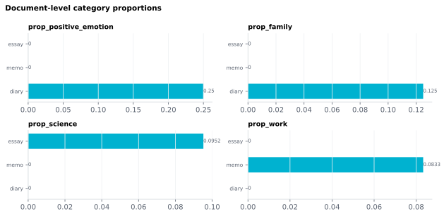

6.2.5Document-level category proportions
For each active semantic category (selected on the Word-level features → Semantic indicators card), the document summary CSV gains two columns.
6.2.5.1What it is
For each active semantic category (selected on the Word-level features → Semantic indicators card), the document summary CSV gains two columns:
count_<cat>— number of content tokens that match<cat>.prop_<cat>— proportion of content tokens that match<cat>(count_<cat> / n_content_tokens).
The dictionary prefix is dropped: Sem_<Dict>_<cat> becomes
count_<cat> / prop_<cat>. Example: if "anticipation" and "body" are
active Empath categories (Sem_Empath_anticipation, Sem_Empath_body),
the doc summary gains count_anticipation, prop_anticipation,
count_body, prop_body. The backend is recorded once per row in the
dictionary_used column.
If the document has no content words, prop_<cat> is blank (NaN,
undefined) rather than 0; count_<cat> is still 0.
Same content-POS filter as the word-level
sem_indicators — function words and PUNCT are
excluded from both numerator and denominator.
6.2.5.2See it
essay.txt: “The structure of the atom consists of a nucleus and a cloud of electrons. The nucleus contains protons and neutrons, which account for most of the mass of the atom. The electrons occupy regions of space at different levels of energy.”
memo.txt: “You must finish the report by Friday. We expect your team to deliver it on time. They missed the last deadline, and we cannot accept another delay.”
diary.txt: “I was so happy today. I saw my mom and my dad and I hugged them. I love them so much and I told them that I love them. We laughed and I cried a little, but I was happy.”

6.2.5.3In your output
| stimulus_id | prop_positive_emotion | prop_family | prop_science | prop_work |
|---|---|---|---|---|
| essay | 0 | 0 | 0.09524 | 0 |
| memo | 0 | 0 | 0 | 0.08333 |
| diary | 0.25 | 0.125 | 0 | 0 |
6.2.5.4MATLAB
% Load the document-level table (one row per stimulus)
T = readtable('document/documents_summary_<timestamp>.csv', 'TextType', 'string');
T.Properties.VariableNames % every column in the file
head(T(:, {'stimulus_id', 'prop_positive_emotion', 'prop_family', 'prop_science', 'prop_work'}), 10) % this feature's columns (first rows)
% Plot
barh(T.prop_positive_emotion); yticks(1:height(T)); yticklabels(T.stimulus_id); xlabel('prop_positive_emotion')
6.2.5.5In the code
Computed in sensi/utils/doc_summary.py:build_doc_summary, called from
sensi/pipeline.py's document-batch finishing step. Walks the
word-level DataFrame after the
semantic_domain stage has populated the
per-token Sem_<Dict>_<cat> columns, then:
n_content = summary["n_content_tokens"] # upos in CONTENT_POS
for col in sem_columns: # every Sem_<Dict>_<cat> except Sem_Categories
cat = col.split("_", 2)[2] # prefix dropped: Sem_Empath_body -> body
count = int(word_df[col].fillna(0).sum()) # 0/1 column, NaN counts as 0
proportion = count / n_content if n_content else float("nan")
summary[f"count_{cat}"] = count
summary[f"prop_{cat}"] = proportion
If sem_indicators is not in the run plan,
no per-category columns exist on the word DataFrame and this aggregate
emits nothing meaningful — the GUI surfaces a warning on the
sem_indicators word-level card in that case.
6.2.5.6EEG rationale
Per-category proportions are the document-level analogue of the
binary Sem_<Dict>_<cat> columns. They answer:
"how affect-laden is this stimulus overall?" or "what proportion of
the words in this story are about social interaction?"
These are exactly the right covariates when:
- Matching stimuli for emotional content across an EEG study (e.g. matched-pair emotion contrasts).
- Looking at large-scale topic effects across a corpus of stimuli.
- Regressing out gross content differences when isolating lower-level acoustic or syntactic effects.
The category set should match what's already configured for the word-level page — they share a single selection, edited in one place (Word-level features → Configure word-level categories…).
6.2.5.7Papers
See sem_indicators — the per-category rationale
and citations apply directly. The proportion-as-stimulus-descriptor
framing follows Tausczik 2010 and
Pennebaker 2015.